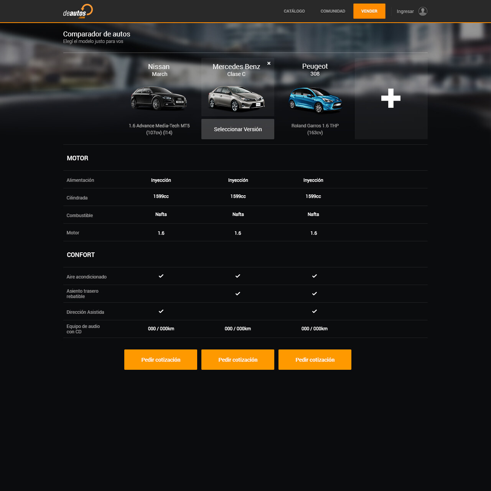
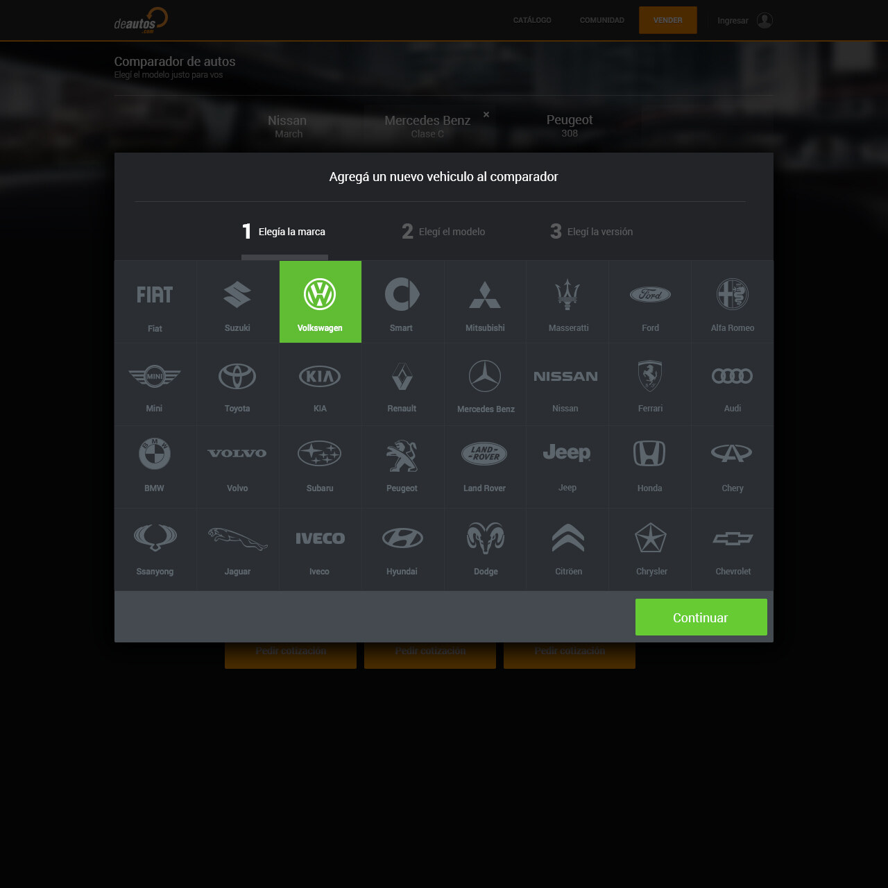
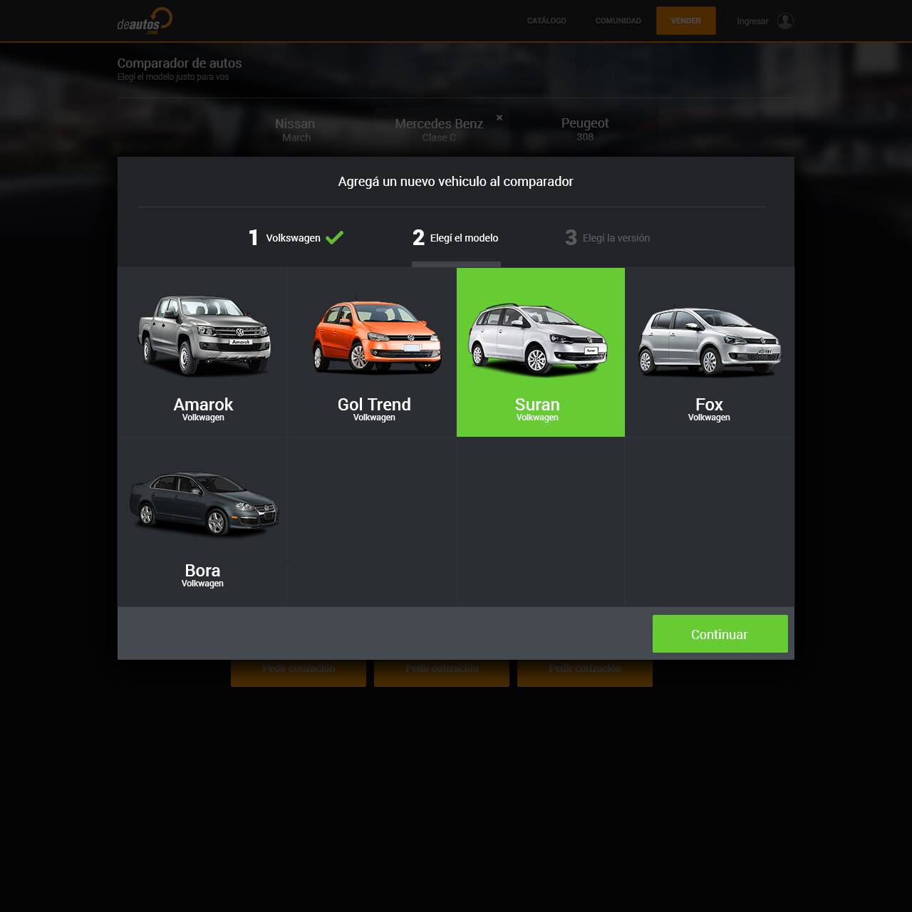
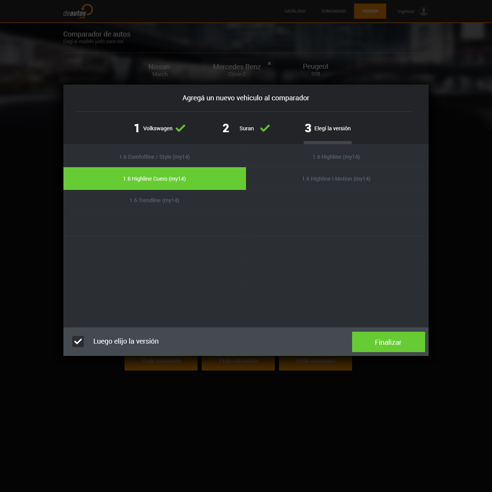
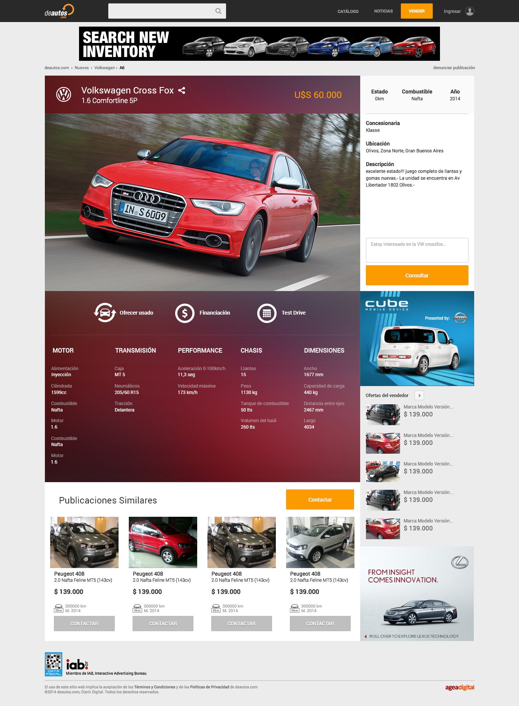
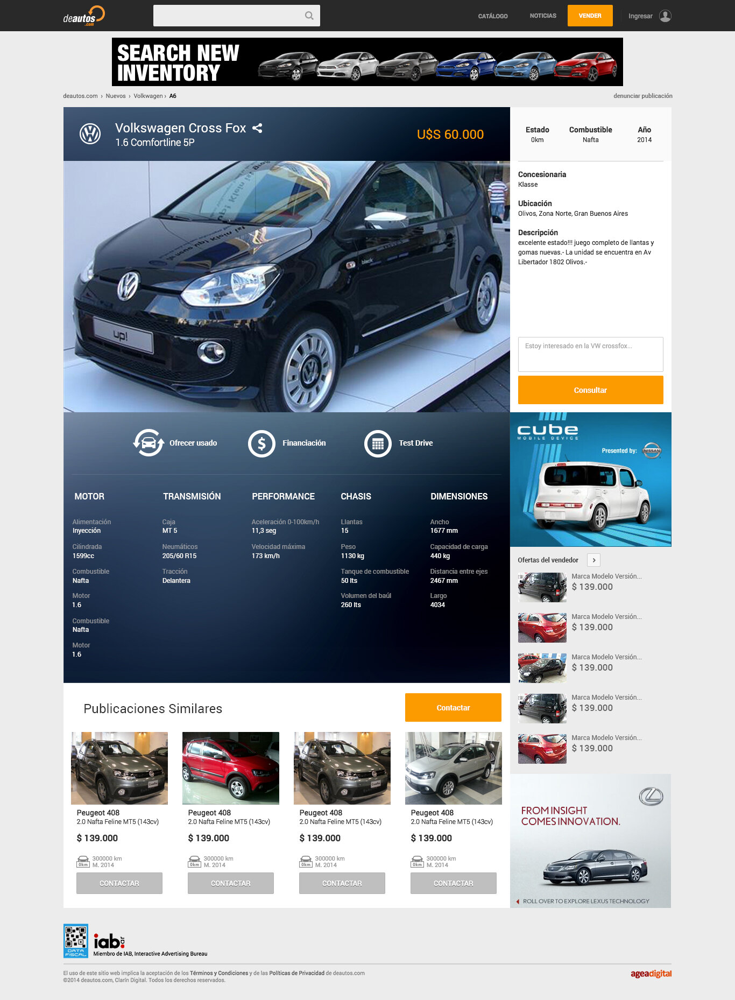
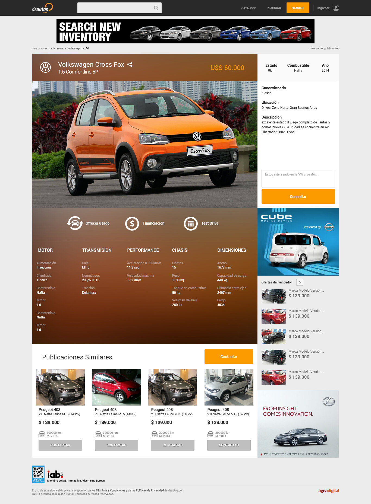

deAutos.com is a transactional marketplace for buying and selling cars, part of Grupo Clarín. This case study samples three separate pieces of work built there: a touchscreen catalog concept for a trade-show kiosk, a car comparison tool, and a redesign of the individual listing pages.
Built for a touchscreen totem at deAutos' stand for Feria del Automóvil, a major car convention at La Rural in Buenos Aires. The video walks through the intended interactions: browse by brand, drill into a model, slide between trims, and pull up the full spec sheet — all designed for a big-screen, finger-driven kiosk instead of a phone or desktop.
A feature concept for comparing cars side by side, up to three at once, with specs grouped into categories like motor and comfort. Adding a car walks through a short brand → model → version wizard instead of one long list.




A redesign experimental proposal for deAutos' individual car listing pages — "VIP" internally. A clearer hierarchy for photos, price, and seller contact, with the full spec sheet and similar listings surfaced below the fold.



This is a small sample of a much larger body of work at deAutos.com — three different problems (a kiosk experience, a comparison tool, and a listing page) tied together by the same visual system and the same close read of what a car buyer actually needs to see first.